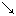

これは「基礎ドイツ語」1953年度４月号［＃「1953年度４月号」は底本では「1952年度４月号」］に発表された関口存男氏の論考「移轍」の再録です．今日の読者に読みやすいように編集者の責任で漢字，かな使いなどを訂正しました．
二十年ほど前の新聞に次のような笑話がのっていました（Gr
 ne Post, 1932）：
ne Post, 1932）：
”Hast du noch Geschwister, Kleine?“
”Nein, ich bin alle Kinder, die wir haben.“
”Nein, ich bin alle Kinder, die wir haben.“
「お嬢ちゃんはまだほかにご兄弟がおありですか？」
「いいえ，全部であたし一人きりなの」
「いいえ，全部であたし一人きりなの」
けだし名答ですな．さてこの ich bin alle Kinder, die wir haben というトンチンカンな文章のトンチンカン性のよってもって来たるところの所以（ゆえん）を，少し野暮ったいが，論理的に分析して見ますと，これは，次にあげる［Ａ］と［Ｂ］の混線です：
［Ａ］Ich bin das einzige Kind des Hauses.
［Ｂ］Das sind alle Kinder, die wir haben.（と両親ならいう）
すなわち，子供としては［Ａ］の方で答えるべきであり，両親としては［Ｂ］の方で答えるべきなのですが，最初ごく自然に Ich bin...... といったまではよかったが，das einzige Kind des Hauses などという紋切り型はとうてい子供の口にはのぼりません．そこで，いつもこういう場合に大人が口にする［Ｂ］の方を継ぎ合わせて間に合わせたというわけです．［Ｂ］Das sind alle Kinder, die wir haben.（と両親ならいう）
いったい小児というものは，大人にいわれる通りの文句をよくおぼえていて，そのままをどこへでもヒョイとはりつけて文章を作るから面白い．この笑話などは，おそらく実話でしょう．実話といえば昨年の Reader's Digest に，五歳の子供にむかって色々な語を与えてその定義を下させた解答がのっていましたが，a rock（岩，たいていは，路などに頭を出している石のこと）とは何かという問にたいする答が面白い：A rock is when trip on it you should have watched where you were going（石というのは，けつまずいて転んだら，もっとよく前を見て歩かないからけつまずく物）なんだそうです．この英語も，文法的見地からながめると甚だおかしな英語ですが［＃「英語ですが」は底本では「英話ですが」］，そのおかしなところが……おかしくて面白いのです．
以上のように，同じ趣旨のことを［Ａ］のようにも［＃「［Ａ］のようにも」は底本では「［Ａ］ようにも」］［Ｂ］のようにも表現できるときに，［Ａ］の前半から［Ｂ］の後半へと連結してしまう現象を，仮に「移轍」（
 bergleisung）と呼ばせてもらいましょう．これは，けっして特殊な希な現象ではなく，よくいう Sprachdummheiten（舌たらず，言葉のまちがい）のほとんど全部がこれであり，また，外国語研究者が面白ろがったり首をひねったりする言語の特癖や畸型（きけい）の九割までがこれなのです．認められた移轍はこれを「文章形態」といい，認められない移轍はこれを「舌足らず」あるいは「文法違反」という……というも過言ではありません．
bergleisung）と呼ばせてもらいましょう．これは，けっして特殊な希な現象ではなく，よくいう Sprachdummheiten（舌たらず，言葉のまちがい）のほとんど全部がこれであり，また，外国語研究者が面白ろがったり首をひねったりする言語の特癖や畸型（きけい）の九割までがこれなのです．認められた移轍はこれを「文章形態」といい，認められない移轍はこれを「舌足らず」あるいは「文法違反」という……というも過言ではありません．
備考：昔から文法家の用いている名称は Anakoluth（または Anakoluthie, Anakoluthon）で，ドイツ語に訳すと，Unfolge（首尾不一貫）――また Kontamination（交錯，混淆，混線）ともいいます．けれども，現象に名称をつけるときには，できることなら名称そのものがすでに説明であるほうがよろしい．移轍という名称を提唱するのはそのためです．――なお Kreuzung（交錯，混血）ということもいわれますが，このほうは不可．なぜかというと「語順」或いは「配語法」のほうの，たとえば Die Kunst ist lang, und kurz ist unser Leben などを古来 Chiasmus, Decussatio すなわち Kreuzung と呼ぶのが通例になっていますから，混同を避けねばなりますまい．また，交叉というと，前後関係が表現されず，桃に柿を継木したのと，柿に桃を継木したのとが同一視される……どころか，その両者の合したものであるかのような感じを与えるから困ります．移轍というのは，ＡとＢとの移轍ではなく，Ａ「から」Ｂ「へ」の移轍なのです．「と」と「と」が問題になる所では交叉も結構ですが，「から」と「へ」が問題になる所では命名法も変ってこなければなりますまい．まあ，別に道楽で異を唱えるのではないという意味の苦しい申しわけです．
許されない移轍
まず，許されない移轍すなわちいわゆる文法上の誤りに近いものから，いわゆる「舌足らず」（Sprachdummheiten）にいたるまでの Sprachleben（言語の実際）をちょっとのぞいておきましょう．まず，全くの語学上の誤りという場合があります．われわれがドイツ語の作文などやっていると，うっかりすると Stilbl
ten（ご愛嬌）というのが飛び出しますが，その九十九パーセントまでが移轍です．たとえば「それはまだ発表されない」を Das wird noch nicht ver ffentlich gemacht などという．これを聞くと同時に，すぐ吹き出したり，苦笑したりする人は割合に語感があるわけですが，なんだかもっともみたいに思われて，どこがおかしいかわからない人も相当あると思います．これは Das wird noch nicht bekanntgemacht と Das wird noch nicht verffentlicht とがゴッチャになったものです．verffentlich という形容詞はありません．ffentlich ならあるが，これはこの際無関係！（これは二三度教室であった実話．）
ffentlich gemacht などという．これを聞くと同時に，すぐ吹き出したり，苦笑したりする人は割合に語感があるわけですが，なんだかもっともみたいに思われて，どこがおかしいかわからない人も相当あると思います．これは Das wird noch nicht bekanntgemacht と Das wird noch nicht verffentlicht とがゴッチャになったものです．verffentlich という形容詞はありません．ffentlich ならあるが，これはこの際無関係！（これは二三度教室であった実話．）ドイツ人は，まさかそんなひどい移轍はやりませんが，たとえ名ある文豪といえども，たとえば次のような舌足らずは，ちょいちょい……ではない，かなりたびたび見かけます：
（１）So war er geneigt zu glauben, die wunderliche Aufnahme, welche er gefunden,［＃「gefunden,」は底本では「gefunden.」］ h nge hiermit im Zusammenhang, so da
nge hiermit im Zusammenhang, so da zum Beispiel......［G．Keller: Kleider machen Leute］
zum Beispiel......［G．Keller: Kleider machen Leute］
nge hiermit im Zusammenhang, so da zum Beispiel......［G．Keller: Kleider machen Leute］
たとえば，かれがこの旅籠に着いたときに妙に歓迎されてしまったという事実にしてからが，やっぱり多少そういうことと関係しているように思えてならなかった，［＃「ならなかった，」は底本では「ならなかった．」］たとえば……
説明：hnge hiermit zusammen から stehe hiermit im Zusammenhang への移轍．（とにかく hngen は一度すればたくさんなので，二度もぶらさがる必要はないわけですからな……）
nge hiermit zusammen から stehe hiermit im Zusammenhang への移轍．（とにかく hngen は一度すればたくさんなので，二度もぶらさがる必要はないわけですからな……）
（２）Die Spher sind immer auf der Lauer, und sie mideuten Gelauschtes zu irgendeinem Vorteil fr sich aus. [H. Stadelmann: Messalina]
her sind immer auf der Lauer, und sie mideuten Gelauschtes zu irgendeinem Vorteil fr sich aus. [H. Stadelmann: Messalina]
スパイどもは鵜（う）の眼鷹（たか）の眼で，なにか聞き込むと，すぐ自分たちに都合のいい方へこじつけてしまう．
説明：mideuten（曲解する）といえば aus は不要．aus を存するには legten......aus.
deuten（曲解する）といえば aus は不要．aus を存するには legten......aus.
（３）Die russische Marine bietet in ihrem Flottenbau keine einheitliche Entwicklung, was zum Teil durch mannigfache Bauauftrge im Auslande zurckzufhren ist. [Tjard Schwarz: Die Entw. des Kriegsschiffbaues vom Altertum bis zur Neuzeit]
ge im Auslande zurckzufhren ist. [Tjard Schwarz: Die Entw. des Kriegsschiffbaues vom Altertum bis zur Neuzeit]
ロシア海軍はその建艦方式において別に一貫した発展の形跡が見えない．このことは，外国への建艦発注が多種多様なのを見てもその一斑を窺（うかが）うことができる．
説明：was zum Teil durch......nachzuweisen (od, zu erklren) ist（……によっても指摘できる）と worauf die mannigfachen Bauauftrge im Auslande zum Teil zurckzufhren sind（海外における多種多様な注文の原因も部分的にはそうしたところに原因がある）との交叉．
ren) ist（……によっても指摘できる）と worauf die mannigfachen Bauauftrge im Auslande zum Teil zurckzufhren sind（海外における多種多様な注文の原因も部分的にはそうしたところに原因がある）との交叉．
（４）Kaum da sie sich vom ersten Schrecken erholt hat, erwartet sie eine alles weniger denn angenehme berraschung. [Neue Post, Nr. 31. Jahrg. 1951. 4. Aug. ”Was tten Sie an Gerdas Stelle?“]
sie sich vom ersten Schrecken erholt hat, erwartet sie eine alles weniger denn angenehme berraschung. [Neue Post, Nr. 31. Jahrg. 1951. 4. Aug. ”Was tten Sie an Gerdas Stelle?“]
最初はあいた口がふさがらなかったが，やっとわれにかえると，こんどはまた甚だ有難くない二度びっくりが彼女を待ちかまえていた．
説明：alles eher, nur nicht angenehme...... と，nichts weniger denn（または als）angenehme との交叉．――「あんまり気持の好いものじゃない」ということを Das ist eher alles, nur nicht angenehm あるいは Das ist nichts weniger als angenehm という（独作文教程，第二十七課，119頁）．
（５）Mit der grten Mhe, und ohne als wenn es etwas Auffallendes wre, band er den Fu wieder fest, legte den Kranken wieder in sein Bett ...... [Tieck: Der Aufruhr in den Cevennen 2]
ten Mhe, und ohne als wenn es etwas Auffallendes wre, band er den Fu wieder fest, legte den Kranken wieder in sein Bett ...... [Tieck: Der Aufruhr in den Cevennen 2]
苦心に苦心を重ねながら，しかもまるで当り前のことのように，足をしっかと結び，病犬をふたたび寝床の中にねかせた……
説明：これは犬の看護をしてやるところ．ohne als wenn などというものがないことは，文法から先にドイツ語を学ぶ日本人には割合はっきりしているはずですが，［＃「はずですが，」は底本では「はずですが．」］ドイツ人にはあんまりハッキリしていないらしい．文法から先きに習ったドイツ語ではなくて，ドイツ語から先に習った文法だからでしょう．ohne etwas Auffallendes daran zu finden から als wenn es nichts Auffallendes wre への移轍．
re への移轍．
（６）Der Lindwurm ist jetzt verendet. Aber Ihr habt noch Eier von ihm im Leibe, deswegen mt Ihr wieder zu Fu heimgehen und daheim fleiig Holz sgen, da es niemand sieht, und nicht mehr essen, als Euch der Hunger ermahnt, damit die Eier nicht ausschlpfen: so knnt Ihr ein alter Mann werden. [J. P. Hebel: Schatzkstlein, ”Der geheilte Patient“]〕
t Ihr wieder zu Fu heimgehen und daheim fleiig Holz sgen, da es niemand sieht, und nicht mehr essen, als Euch der Hunger ermahnt, damit die Eier nicht ausschlpfen: so knnt Ihr ein alter Mann werden. [J. P. Hebel: Schatzkstlein, ”Der geheilte Patient“]〕
竜はもう死んでいますが，その卵がまだからだの中に残っているようですから，やっぱり今までどおり歩いてお帰りなさい，そして，人に見られないように，せっせと鋸（のこぎり）で木をお挽（ひ）きなさい，そして，お腹が減らなければ絶対に物を食べないようにして，その卵がかえらないようにしなければだめです．そうすればきっと長生きできます．
説明：いま，この文の翻訳をしながらそう思ったのですが，「お腹が減る」という日本語が既に「お腹が空く」から「お腹の中にはいっているものが減る」への移轍です．だってそうじゃありませんか．お腹が五つも六つもあって，それが二つか三つに減るというわけではないのですから，「お腹が減る」というのは本当は舌足らずの変ないい方なのです．ドイツ語でも，気圧がさがることを「気圧計が落ちる」（Das Barometer fllt）といったりしますが「卵がはい出す」とはいいません．これはやはり die Eier nicht ausgebrtet werden（卵が孵化されないように）から die Brut nicht ausschlpft（幼獣が卵を割ってはい出てこないように）への移轍です．
llt）といったりしますが「卵がはい出す」とはいいません．これはやはり die Eier nicht ausgebrtet werden（卵が孵化されないように）から die Brut nicht ausschlpft（幼獣が卵を割ってはい出てこないように）への移轍です．
（７）Ich babe nicht nur sie berlebt, sondern auch das Wunderbare, dessen auerweltlicher Schein einmal auf mich fiel und dessen man spter, auch wenn man es erfahren hat, nur wie an etwas Unwirkliches denkt. [Heinrich Mann: Das Wunderbare.]
berlebt, sondern auch das Wunderbare, dessen auerweltlicher Schein einmal auf mich fiel und dessen man spter, auch wenn man es erfahren hat, nur wie an etwas Unwirkliches denkt. [Heinrich Mann: Das Wunderbare.]
私は，彼女にも先立たれたし，またかつて私にその超世間的な妖光（ようこう）を投げかけた霊妙体験ももはや過去の事実となってしまい，体験したということは現実の事実であるにせよ，どう考えてみても，なにかこう非常に現実ばなれのした話としてしか想い出せないのである．
説明：dessen といったら dessen man sich spter wie etwas Unwirklichen erinnert で，an を存するなら an das man...... としなければならない．
ter wie etwas Unwirklichen erinnert で，an を存するなら an das man...... としなければならない．
（８）Kellner! Kaffee!―― Nu bin ich blo neugierig, wie lange das dauert, bis keiner kommt.［＃「neugierig」は底本では「ngugierig」］ [Jul. Keller und Louis Herrmann: Knig Krause,  ]
]
neugierig, wie lange das dauert, bis keiner kommt.［＃「neugierig」は底本では「ngugierig」］ [Jul. Keller und Louis Herrmann: Knig Krause, ]
ボーイさん！コーヒー！――いったいいつまで人を待たせておくんだ，いつまで待ったってだれも来やしない！
説明：wie lange das dauert, bis einer kommt［＃「bis einer kommt」は底本では「bis einer einer kommt」］ から da mag man noch so lange warten als man will, es kommt keiner への脱線．（正しくは es kommt keiner の代りに keiner kommt という方が形式の説明には適当でしょう）．
ROLLER: Wit ihr auch, da man uns auskundschaftet?［＃「auch」は底本では「acuh」］
GRIMM: Da wir keinen Augenblick sicher sind, aufgehoben zu werden? [Schiller: Die Ruber,  . 2]
. 2]
t ihr auch, da man uns auskundschaftet?［＃「auch」は底本では「acuh」］GRIMM: Da
wir keinen Augenblick sicher sind, aufgehoben zu werden? [Schiller: Die Ruber, . 2]
ロラー：諸君，知ってるか，足がついたらしいぞ！
グリム：いつポリがふみ込むかわからんというのかね？
グリム：いつポリがふみ込むかわからんというのかね？
説明：aufheben は ausheben と同じで，英の round up「大量検挙する」こと．Da wir keinen Augenblick unserer Freiheit sicher sind から Da wir jeden Augenblick die Gefahr laufen, aufgehoben zu werden への移轍．
wir keinen Augenblick unserer Freiheit sicher sind から Da wir jeden Augenblick die Gefahr laufen, aufgehoben zu werden への移轍．
（10）Keine blasse Ahnung war mehr vorhanden ber das Wesen der Kraft, die Mnner aus freiem Willen und Entschlu in den Tod zu fhren vermag. [Hitler: Mein Kampf.]
ber das Wesen der Kraft, die Mnner aus freiem Willen und Entschlu in den Tod zu fhren vermag. [Hitler: Mein Kampf.]
男児をして自発的に進んで死に赴く（おもむ）かしめるにはどうした力が必要かという，そうした力の正体を本当に認識している政治家はもはや一人もいなかった．
説明：このへんから，「トンチンカン」というよりはむしろ非常に微妙な，いわゆる「舌たらず」という現象になります．aus freiem Willen und Entschlu in den Tod gehen lt（または der Kraft, welche macht, da Mnner aus freiem Willen und Entschlu in den Tod gehen）と der Kraft, die Mnner in einen freiwilligen und selbstgewhlten Tod zu fhren vermag の交叉．なぜなら――ここが言語の厳密な論理なのですが，―― aus freiem Willen fhren といえば，「自発的に導く」ということで，これを「自発的に赴（おもむ）くように指導する」という意味に用いるということは，だれがどう考ても，牽強（けんきょう）にあらずんば附会，附会に非ずんば牽強ではないでしょうか？）
in den Tod gehen lt（または der Kraft, welche macht, da Mnner aus freiem Willen und Entschlu in den Tod gehen）と der Kraft, die Mnner in einen freiwilligen und selbstgewhlten Tod zu fhren vermag の交叉．なぜなら――ここが言語の厳密な論理なのですが，―― aus freiem Willen fhren といえば，「自発的に導く」ということで，これを「自発的に赴（おもむ）くように指導する」という意味に用いるということは，だれがどう考ても，牽強（けんきょう）にあらずんば附会，附会に非ずんば牽強ではないでしょうか？）許されない移轍と許された移轍との境界は微妙
とはいえ，許されない移轍と，許された移轍との境界が，いわば紙一重（Tuchfhlung）のきわどさであるということは，ただいま挙げた最後の例の aus freiem Willen und Entschlu でもわかります．これは「主語関係」のあいまいさの問題ですが，同様のことが「述語句」においては充分許される傾向があります．（拙著：『改訂新ドイツ語文法教程』376：述語句と，その外郭をなす基礎文との関係について）．また，性数格の合わせ方における不規則は，大部分が移轍の現象で，そのどのあたりまでを許された範囲と見るかということは，たいていの場合異論百出といったまことにむつかしい問題です．公認された移轍の一例：主文形式から主文形式への移轍
さて，既に認められてしまって，一つの既成形式を成すに至った移轍にはどんなものがあるか？ これを全部列挙するということは，要するにドイツ文法の中のあらゆる面白い奇妙な文型を全部列挙するということで，換言すれば，ドイツ文法の約三分の一を書くということです．なぜなら，最初に申したごとく，少しでも理窟に合わない構造があれば，それはたいてい移轍なのですから．――だから，そんな徹底的な詳述は，この限られた記事ではとうてい不可能ですが，今回のところは，問題を「主文と副文の関係」に限定しましょう．と申しますのは，たとえば「それは私のものだ」ということを Das gehrt mein（Das gehrt mir から Das ist mein への移轍）というといったような面白いことは沢山ありますが，こんなのは非常に特殊な事実で，かつ，文と文との関係ではなくて，一文内における関係ですから，こうした型の移轍は問題外として今回は主文と副文との関係の移轍，あるいはもっと制限して「主文形式から主文形式への移轍」だけについて述べて見ようと思います．そうしたら頁数もやっと間に合うでしょう．移轍を起す主文・副文関係にはやはりその「意味形態」がある
これから述べようとする「認められた移轍」の一系列は，たとえば「……するやいなや……する」とか「……として……せざるはなし」とか，「たとえいかに……なりとも……なり」とかいったような文型ですが，これらにはすべて共通の「意味形態」というものがあります．意味形態というものは，単に陰然と頭の中に伏在するだけなので，よほど文章の上手な人でないと「定義」するということはちょっとできません．私などは，たいていの場合「形容」するだけであきらめています．ここも，まず形容の程度と思っていただきます．（定義よりは形容，これが意味形態の本質らしく思われます）．
まず，たとえば「風が吹き止んだかと思うと，こんどは雨が降りだした」を Kaum hatte der Wind sich gelegt, als es schon zu regnen begann といえば正規の構造ですが，それ以外に Kaum hatte sich der Wind gelegt, da begann es schon zu regnen という移轍現象が認められています．また，「試みとして成らざるはなし」を Er unternimmt nichts, es gelingt ihm といったり，「どんな完全な法律でも抜け穴の一つや二つはある」を Kein Gesetz ist so vollkommen, es hat ein Loch oder zwei といったりするのも，これも明らかに移轍です．また，「もう少しのところで泣き出すところだった」というのを Es fehlte nicht viel [daran], da
er nicht angefangen htte zu weinen という正規に近い構造（これもじつは移轍なんですが）以外に Es fehlte nicht viel, so htte er angefangen zu weinen という移轍型があります．また，「しばらくすると扉があいた」を Es dauerte nicht lange, bis die Tr aufging という代りに Es dauerte nicht lange, da ging die Tr auf といいます．また，「あいつのことだから，忝（かたじ）けなく頂戴するかも知れぬ」を Er wre imstande, es dankbar anzunehmen という代りに Er wre imstande und nhme es dankbar an という……等々．これらすべてに共通な意味形態は何でしょう？（いつもいうことで，甚だ恐縮ですが，「意味」と「意味形態」とを混同してはいけません：「意味」はおのおのいわばお互いになんの関係もないほど懸（か）けはなれていますが，意味「形態」にはなにか共通なところがあるように思われます．でなければ，これらの文型にかぎって移轍という現象を起すというわけがわかりません）．
さあ，むつかしいことになって来た！問題があんまり簡単すぎて，まるで複雑怪奇なるかのごとき感じを与えます．しかし，意味形態というものは，「定義」しようとすると大変ですが，「形容」なら曲りなりにもできるはずです．むしろ曲りなりの方が直截（ちょくせつ）で，よくわかります．――それはこうです．
まず，以上に列挙した数型には，すべて何かコウ「誇張的」な何物かがあります．換言すれば「強烈な一筋の論旨で貫いた」ところがあります．強烈な一筋の論旨で貫こうとすれば誇張になる，誇張せんとすれば，二段構えよりは一筋の強烈な論旨で貫くのが一番有効です．そこで，文法形態としては，主文・副文の二段構えにならざるをえないが，裏面に支配する意味形態は，ほとんど主文も副文もヘッタクレもないほど「一瀉千里［＃「一瀉千里」は底本では「一潟千里」］」であり，「一挙」であり，「一息」であり，「渾一如（こんいちにょ）」であり，「単一」であり，「単純」です．移轍の生ずる原因もここにあり，移轍の許される所以（ゆえん）もまたここにあります．
比較のために，主文・副文の関係がそれほど渾一体をなすに至らず，やはりその文法的構造の通り，いかにも「二段構え」らしい感じを与える例を二つだけ挙げてみましょう（これらは，完全には公認されないのが普通です）：
（１）Ein groer Schritt zur Veredlung ist geschehen, da die Gesetze tugendhaft sind, wenngleich auch noch nicht die Menschen. [Schiller: W. h. u. z. w. E. st. m. Universalgeschichte?]
er Schritt zur Veredlung ist geschehen, da die Gesetze tugendhaft sind, wenngleich auch noch nicht die Menschen. [Schiller: W. h. u. z. w. E. st. m. Universalgeschichte?]
たとえ人間そのものは未だ然（しか）らずとはいえ，せめて法律だけでも徳高きものとなったということは，これ実に人類陶冶の理想に向って一大躍進が行なわれたというべきである．
（２）Es ist aber ein groer Gewinn, wer gottselig ist und lsset sich gengen. [N. T. Timotheus 6, 6]
er Gewinn, wer gottselig ist und lsset sich gengen. [N. T. Timotheus 6, 6]
神意を体し，足ることを知る，これ大功徳なり．
説明：（１）da は wenn からの移轍．即ち Es ist ein groer Schritt zur Veredlung, da ...... へ移轍したもの．――（２）これも Es ist ein groer Gewinn, wenn einer gottselig ist ...... から Einen groen Gewinn erzielt, wer ...... とでもいったような文法形態への移轍．
は wenn からの移轍．即ち Es ist ein groer Schritt zur Veredlung, da ...... へ移轍したもの．――（２）これも Es ist ein groer Gewinn, wenn einer gottselig ist ...... から Einen groen Gewinn erzielt, wer ...... とでもいったような文法形態への移轍．こうした wenn...... からの移轍は，「やや許される」方の文型に属します．なぜ「やや」かというと，それは，その意味形態の渾一如性もまた「やや」の程度にすぎないからです．［＃「すぎないからです．」は底本では「すぎないからです，」］後半の副文（定形後置）が，ただいま問題にしている場合のように定形正置（または倒置）の独立文に移行しないで，依然として副文のままであるのを見ても，こうした関係がわかりましょう．それかあらぬか，これらの wenn 型のもの，その他これに類したものは，必ずしもそうハッキリとした公認型を成すに至りません．移轍を認めるに充分なだけの意味形態的一貫性がないのです．というよりはむしろ，ほとんど二段構えの文法形態のままが直ちにもって大体その意味形態でもあるのに，何を苦しんでわざわざ移轍するのか，という批判が当然働かざるをえませんから，これらを公認形式にまで高めないのは，ドイツ人の語感として，およそ自然なことといわざるをえません．
これでまず大体問題の核心を正面と裏面の両側から追いつめることができました．泥坊はつかまった．さて縄です．なかなか忙がしい．
縄はこうです：「移轍というのは，一つの意味形態に対してＡ，Ｂ，二様の文法形態が考えられる場合に，電流じゃないが，いわばＡの前半からＢの後半へとショート（短絡）してしまうことですが，その際，次のごとき条件が完備するというと，移轍はひじょうに起り易くもあり，かつまたもっとも認められ易くもある：
１．なんらかの意味において，伝統的に与えられている文法形態が，人間自然の意味形態を無縫端的に再現しえないとき（すなわち両形態間に「ひらき」が生ずるとき）．
２．ことに，文形形態としては（定形後置の）副文を要求するが，意味形態の「無縫一如性」としてはそうした二段構えを断然斥（しりぞ）けざるをえないほど「話が簡単」なとき．
これが縄です．一名を定義ともいう．定義とは泥縄ですなツマリ．しかし，縄がなえただけではいけない．泥坊をしばらなければ仕事は片づかない．泥坊をしばるか，泥坊にしばられるか，マア一つやってみましょう：
まず文法形態というもの，ことに定形後置という「尻重の」（航空の方でいわゆる schwanzlastig），「野暮ったい」，「くどい」，「論理的な」，「あまりに理路の立ちすぎた」副文という文法形態についてドイツ語研究者は大いに反省していただきたい．これはドイツ語の癌です．博士になりたい人にはいい材料です．
とにかく，言語（文法形態）というものは，伝統や国民性や習慣の関係があって，哲学者のいわゆる Eigengesetzlichkeit（それ独自の法則性）をもっており，たとえは Es fehlte wenig [daran]，といえば次は必ず”da
......接続法第２式の後置“でなければならぬといったような，実に杓子定規な，廻りくどいものです．まあ官庁みたいなものと思えばよろしい．ところが，意味形態の方はいたって短気で，副文もへったくれもあったものじゃない．わが脳裡に意味形態あり，汝が脳裡に意味形態あり，なんすれぞそれ da や htte を介せんや，てなわけで，パチッと短絡（Kurzschlu）してしまうのです．つまり，意味形態が或る種の単純な無縫一貫性をもった渾一如型である場合には，「話は簡単だ」という肚があるもんだから，融通の利かない文法形態が野暮ったくもって廻っていつまでもクドクドと文法的辻棲（つじつま）をあわせているのがハタで見ていられなくなって，［Ａ］型を中断して，「おい，どけ」といって，もっと手っ取り早い［Ｂ］型の後半へと切りかえてしまうのです．（だから［Ａ］型は大抵前半が主文で後半が副文，［Ｂ］型はその逆順になっています．）
言葉の通じない外国人を相手に，通訳を介して喧嘩するときみたいなものです．通訳がなにかクドクドいっているが，こっちの直截かつ端的な考え方が一向相手に通じた様子が見えない，そこで通訳を押しのけて，本人みずから相手に近づいて，日本語で「馬鹿やろう！」といって横っ面をぶん殴ればこれが最も効果的です．結局問題は「馬鹿野郎！」以外に大して複雑なことはなにもないので．なんならそれすら必要はない，ピシャッと横っ面をぶんなぐっただけで話は充分わかるのですからね．
この「効果的」ということ，それから「話は充分わかる」ということ，「問題はいたって簡単だ」ということ，――この辺がつまりここで問題にしている意味形態の（定義ではなくて）形容の「やま」だといってよいでしょう．
〔Ａ〕主文・副文

〔Ｂ〕副文・主文
最後に，念のために，文法形態の側から，この種の移轍を定義しておきます．文法形態は，形容ではなくて，定義です．「ある種の渾一貫性を具（そな）えた意味形態を表現するのに，文法形態として，主文の次に副文，副文の次に主文，という二つの形式が与えられている場合，移轍はたいてい主文から主文へと行われる」――その逆，すなわち副文から副文へという例は私の知る限り絶無なようです．
もちろん，「主文・副文」型から，別な「主文・副文」型へ移轍して，その結果が形式的には依然として「主文・副文」型になるのもあります．たとえば前にあげた Kein Gesetz ist so vollkommen, es hat doch ein Loch oder zwei の型には Es ist kein Gesetz so vollkommen, das nicht auch ein Loch hat oder zwei という，関係文へ移轍する型も多く見受けられるからです．しかし，この型は，いわば中途半端な short circuit です．同じショートするなら，もっと短気にパチンとショートすればいいのに，相変らず定形後置になっているところが，いわば中間形態であることを証しています．以上で理窟は終りとして，次に，この特殊な型の類型を，頁数の許すかぎり，個別的にくらべて見ましょう：
（１）「……として……ならざるはなし」型
たとえば「私はなにを見ても感心する」ということを Ich kann mir nichts ansehen, es hat es mir gleich angetan などといいますが，これはもちろん Ich kann mir nichts ansehen, ohne da es mir es gleich angetan htte から Sehe ich mir etwas an, es hat es mir gleich angetan（Wenn ich mir was ansehe, so hat es mir es gleich angetan と同じ）への移轍です．
（１）Wohin ich trat, da segnete man dich, / Kein Kind ging schlafen, ohne dein zu gedenken, / Kein Becher ward geleert, du hattest ihn / Gefllt, kein Brot gebrochen und verteilt, / Es kam aus deinem Korb. [Hebbel: Die Nibelungen. . 5. 2]
. 5. 2]
llt, kein Brot gebrochen und verteilt, / Es kam aus deinem Korb. [Hebbel: Die Nibelungen.. 5. 2]
どこへ行っても，みんながあなたを祝福しておりました．幼児は就寝の祈りにあなたの名を唱（とな）え，盃を挙げるものがあれば，それは必ずあなたがお満（み）たしになった盃であり，パンを割（さ）いて人々に頒（わか）つ者があれば，それは必ずあなたの籠から恵まれたパンであったのです．
（２）Sonst, wenn der Vater auszog, liebe Kinder; / Da war ein Freuen, wenn er wiederkam; / Denn niemals kehrt' er heim, er bracht' euch was. [Schiller: W. Tell]
いつもなら，この親父が山へ出かければ，帰ってくるとおまえたちは大騒ぎをしたものだった．帰れば必ずなにかお土産をもって来たからな．
この型は英語では相当発達を遂げています（ドイツ語はそれほどでもありません．ドイツ語はむしろ Kein Berg ist so hoch 「山はどんなに高くても」などという，次項にあげる形の方が一般的で，英語はその逆なのです）．ただし英語は，中間に but, but that または but what がはいります．たとえば It never rains but it pours という句がありますが，これは「降れば土砂降り」あるいは解釈を入れると「降れば土砂降り，泣けば蜂」です．つまり結局「泣き面に蜂」のことですが，なんなら but that it pours または but what it pours ともいえないことはありますまい．ドイツ語でなら but も what も不用で，Es regnet nie, es gie
t in Strmen というわけですが，英語では Es regnet nie, es gsse denn in Strmen に相当する別型の方を用いるというわけです（この denn 型，nun 型の移轍については拙著『接続法の詳細』140頁以下をごらん下さい．少し厄介なのでここでは省かせてもらいます）．その際面白いのは，but の次では代名詞の主語が省かれるという現象です：Not a soul but felt a fever of the mad （Keine Seele, die nicht ein Fieber gleich den Tollen fhlte; Schlegel 訳）[Sh. The Tempest. 1. 2]――また，古いところでは，この主語省略を用いさえすれば but はなくてもよく，結局は独とよく似た文法形態になる型すらあります（There's nothing ill can dwell in such a temple; The Tempest, 1, 2）が，意味形態は全然ちがいます．仏語も，この型には，sans que （ohne da
）の代りに que を用いることが非常に多いといえましょう．この que は勿論関係代名詞のこともあるが，ここでいっているのは da の que で，つまり英の butと同じものです．たとえば Il ne se faisait pas une affaire que mon p re n'y particip
re n'y particip t（なにか取引が行われれば，必ず私の父が関係していた）の que は、別に y があるのでもわかる通り，da の意の que です（participer
t（なにか取引が行われれば，必ず私の父が関係していた）の que は、別に y があるのでもわかる通り，da の意の que です（participer  ...... ですから，関係代名詞なら laquelle でなければなりますまい）．これは，この場合だけで見ると，sans que から de la sorte que への移轍と考えてもよいでしょうが，仏語一般のこの種の que の用法は，英の but と同様，いわば一種の形式化で，独の場合のごとく定形後置ということがないために，露骨な移轍としては感ぜられません．その点独は移轍の経過を露骨に形として曝露する面白い言語です．
...... ですから，関係代名詞なら laquelle でなければなりますまい）．これは，この場合だけで見ると，sans que から de la sorte que への移轍と考えてもよいでしょうが，仏語一般のこの種の que の用法は，英の but と同様，いわば一種の形式化で，独の場合のごとく定形後置ということがないために，露骨な移轍としては感ぜられません．その点独は移轍の経過を露骨に形として曝露する面白い言語です．この型に属するものに，仏語には「……に至るまで，〜として……せざるはなし」という意味で Il n'y a jusqu'
......qui（que）とか Il n'est pas jusqu' ......qui （que）とかいう特殊な移轍が認められた型をなしています．たとえば Il n'est pas jusqu' la voix qui ne me rappelle （接続法） mon fils （声まで私のせがれにそっくりだ）など．これは恐らく Il n'est rien qui ne me rappelle mon fils と Jusqu' la voix me rappelle mon fils との交叉で，否定詞（というよりむしろ半否定詞）の ne が仏語独特の妙な役割を演じているために，一見移轍でなくて合理的な文法形態であるかのような錯覚を起させるのです．（２）「たとえどんなに……でも，……せぬということはない」
前述の文型の前半に so ＋形容詞（または副詞）がはいると少しちがった意型が生じ，これがドイツ語では英仏に見られないほど頻繁に用いられる常用形式をなしています．殊に俚諺にはよく出てきます．たとえば Keiner ist so alt, er mchte noch ein Jahr leben 或いは Es ist keiner so alt, er mchte noch ein Jahr leben など．意味は，「たとえどんなに年を取ろうとも，あとモウ一年だけ生きていたいと思わない人間はない」ということですが，これは次のように,［Ａ］から［Ｂ］へと移轍したものです：［Ａ］Keiner ist so alt, da er nicht noch ein Jahr leben mchte.
er nicht noch ein Jahr leben mchte.［Ｂ］Einer sei noch so alt, er mchte noch ein Jahr leben.
［Ｂ］の前半は，独文の都合上主文形の認容句を用いましたが，その意型は副文的で，つまり Wie alt einer auch sein mag とか So alt einer ist とかいうのと同じで，これも実はそれ自体がすでに移轍なのですから，これを以て見ても，移轍という筋路がいかに文型の根本に支配するかがわかりましょう．たとえば Du bist...... という簡単な句までが，歴史的には移轍なので，ほんとうは Du bi だけ，或いは bi-st だけでいいところを，いつの間にか「汝」を意味する st と du とを二つ用い出した……といったようなことが，言語現象の根本にいくらかくれているかわかったものではありません．chte noch ein Jahr leben.次に，この同じ文を，関係代名詞でつないで Keiner ist so alt, der nicht noch ein Jahr leben m
chte ともいうことができます．この方は，主文から（別系統の）「副文」への移轍であるために，うっかりすると合理的文法機構であるかのような錯覚を起させがちですから，特に注目を要します：［Ａ］Keiner ist so alt, da er nicht noch ein Jahr leben mchte.
er nicht noch ein Jahr leben mchte.［Ｂ］Es ist kein noch so alter Mann, der nicht noch ein Jahr leben mchte.
この関係は，よほど頭をよくして，じっくりと論理関係を睨（にら）んで下さい．いったい関係代名詞とその先行詞との関係は，文法論理の上から見て，とても厳密なものでなければならないのですが，その関係が往々にしてなんら首肯しうべき意味形態をなさないことがあれば，それは先ず十中八九「移轍」なのですから，文法学者としては，それがいかなる［Ａ］型から如何なる［Ｂ］型への移轍であるかを発見しなければならない，というわけです．chte.そこで，この型は，主文から主文への直結型と，主文から関係文への移轍との二つに分れますから，まず前者の数例をあげます：
（１）Kein Betrger ist so schlau, er verrt sich. [J. P. Hebel: Schatzk.]
seine Not zu klagen. [Sprichw.]
s, sie zge gern ein frommes Kind. [Sprichw.]
rt. Und das geschah auch diesen Nachmittag. [Otto Ludwig: Aus dem Regen in die Traufe.]
ger ist so schlau, er verrt sich. [J. P. Hebel: Schatzk.]
どんな頭の好い詐欺師でも最後には馬脚を露わす．
（２）So albern ist keiner, er wei seine Not zu klagen. [Sprichw.]
どんなバカでも，愚痴だけは人並みにこぼす．
（３）Es ist keine Mutter so bs, sie zge gern ein frommes Kind. [Sprichw.]
どんなに性（しょう）の悪い母親でも，子供だけは好い児に育てたい．
（４）Aber es hat kein Pfarrer so lange gepredigt; einmal hat er doch aufgehrt. Und das geschah auch diesen Nachmittag. [Otto Ludwig: Aus dem Regen in die Traufe.]
けれども，いったいお坊さんのお説教というものは，たとえどんなに長くなっても，やめる時が来ればやはり流石にやめるとしたもので，この午後もやはりその例に洩れなかった．
次は，第二型の方，すなわち関係代名詞でつなぐ方の型の文例です．
（１）Ich habe es allezeit gehrt: kein Mensch ist so bse, der nicht auch etwas Gutes an sich htte. [Luise Adelgunde V. Gottsched: Das Testament]
uber . 1]
nnte. [Goethe: W. M. s W., 9]
rt: kein Mensch ist so bse, der nicht auch etwas Gutes an sich htte. [Luise Adelgunde V. Gottsched: Das Testament]
よく申すじゃございませんか，たとえどんな悪人でも，底を洗えば必ず多少なにか善いところもあるものだって．
（２）Keine Pflicht ist mir so heilig, die ich nicht zu brechen bereit bin, wenn's um Euer kostbares Leben zu tun ist. [Schiller: Die Ruber . 1]
たとえどんなに固い義理でも，あなたの貴重な一命を救わんがためには，弊履（へいり）のごとく棄ててみせますよ．
（３）Kein Glaube ist jemals so ungereimt gewesen, zu welchem nicht etwas Wahres den Grund gelegt haben sollte. [Wieland: Der goldene Spiegel.]
どんな不合理な迷信でも，それが生ずるにはなにかもっともなわけがあったに相違ないのだ．
（４）Alles wohlhabende Leute, die mir alle gewogen sind. Es ist niemand zu reich, dem man nicht einmal wohlwollend einen bedeutenden Dienst erweisen knnte. [Goethe: W. M. s W., 9]
すべて私に好意を寄せてくれる裕富な人たちばかりだ．というのは，たとえどんなに金持ちでも，たまにはなにかこちらから相当の親切を尽して喜ばせる余地は必ずあるとしたものだから．
備考：仏は，これによく似た型で中間を que［＃「que」は底本では「quc」］ で結合して条件法の定形を用いて「たとえいかに……になりとも……」の表現をします：Et je verrais mourir frre, enfants, mre et femme, / Que je m'en soucirais autant que de cela [Molire: L'Avare, 1. 6]（たとえ兄弟が死のうと，子供が死のうと，母が死のうと，妻が死のうと，わたしや［＃「わたしや」はママ］屁とも思わんです．）――この que je m'en soucirais［＃「soucirais」は底本では「souciras」］ ...... は，英語なら for aught I care または for all I care です．独では，この型はむしろ Und wenn（＋接続法第２式の後置）或いは Und（＋接続法第２式の倒置）の型によって表現される意型で，ここで述べる意型とは少し型がちがいます．
re, enfants, mre et femme, / Que je m'en soucirais autant que de cela [Molire: L'Avare, 1. 6]（たとえ兄弟が死のうと，子供が死のうと，母が死のうと，妻が死のうと，わたしや［＃「わたしや」はママ］屁とも思わんです．）――この que je m'en soucirais［＃「soucirais」は底本では「souciras」］ ...... は，英語なら for aught I care または for all I care です．独では，この型はむしろ Und wenn（＋接続法第２式の後置）或いは Und（＋接続法第２式の倒置）の型によって表現される意型で，ここで述べる意型とは少し型がちがいます．（３）「……するやいなや直ちに……する」
これが移轍を最も起し易い意型であることは，その意味からもすぐにわかります．意味から来る逼迫（ひっぱく）感と遽（あわただ）しさが表現形式までもまごつかせ，その「まごつかせた恰好」がむしろこの場合にうってつけであるところからむしろまごつかないと恰好がつかない，或いは，恰好のつかないのが一番好い恰好である，という面白い場合です．故にこの型は最も普通な公認移轍として取り扱うべきです．まず，この意型の表現には，今までのと同じような移轍を用いる形式があります．ただし，直結しないで，間を so（または da, und）でつなぎます．
（１）He da! schon wieder? Ich mache kein Auge zu, so schlage ich mich mit ihm herum. [Lessing: Minna v. B.]
nnte nicht die Sanduhr rinnen sehn, / So dcht' ich gleich an Seichten und Bnke. [Schlegel: Shakespeare's "Der K. v. V." ]
いけねえ！まただ．うとうとしたと思うと，もう早速の野郎とドタンバタンだ．
（２）Ich knnte nicht die Sanduhr rinnen sehn, / So dcht' ich gleich an Seichten und Bnke. [Schlegel: Shakespeare's "Der K. v. V." ]
たとえ砂時計を見ても，もう早速浅瀬と暗礁を連想するほどです．
これは――たとえば第一の文を例に取ると――次のような分解になります：
［Ａ］Ich mache kein Auge zu, ohne da ich mich mit ihm herumschlge.
ich mich mit ihm herumschlge.［Ｂ］Mache ich nur ein Auge zu, so schlage ich mich mit ihm herum.
この意型の表現にことに多いのは Kaum（定形は完了時称）と so または da（定形は基本時称）です．
Kaum hatte sich ein Besucher verabschiedet, so meldete sich auch schon ein zweiter.
これは次のような方式で解きます：
一人のお客が出ていったかと思うと，もうすぐにお次のが刺（し）を通じていた．
［Ａ］Kaum hatte sich ein Besucher verabschiedet, als sich auch schon ein zweiter meldete.
［Ｂ］Hatte sich ein Besucher endlich verabschiedet, so meldete sich auch schon ein zweiter.
［Ａ］の方は，文法形態に即した意味は，一種の誇張で，「第二の客が刺を通じた瞬間には，第一の客はまだほとんど暇（いとま）を告げ終ったか告げ終らないかの際であった」で，これは多くの場合嘘のことが多い．Kaum...... の文の方は，ほんとうは完了形でなくてはいけない筈なのですが（これが文法論理の糞やかましいところです），移轍はこの御規則をすら突破して「……すると，その次に……する」というのだから，両方とも基本時称でよかろうというので，
Kaum wird es in der engen und hohen Strae dster, so sieht［＃「sieht」は底本では「sient」］ man hie und da Lichter erscheinen, an den Fenstern, auf den Gersten sich bewegen. [Goethe: Ital. Reise.]
などと，両方とも現在（或いは過去でもよい）でやっつけるのも当然のことのようになっています．e dster, so sieht［＃「sieht」は底本では「sient」］ man hie und da Lichter erscheinen, an den Fenstern, auf den Gersten sich bewegen. [Goethe: Ital. Reise.]
狭い，家並の高いこの街路に夕闇が迫ると，あちこちにぽつぽつと灯影が見え初めて，それが，あるいは窓辺に，あるいは屋台の上を右往左往するのが見える．
Kaum による誇張が更にひどくなると，noch nicht でもよいわけです：
Und nun geschieht etwas Schnes. Das Wort ist noch nicht erklungen, und schon sind zwei Menschen zur Tat bereit. [Zeitung. 1934]
nes. Das Wort ist noch nicht erklungen, und schon sind zwei Menschen zur Tat bereit. [Zeitung. 1934]
その次が実に嬉しい．というのは，その言葉が終るか終らないかという瞬間に，もう早速志願者が二人できてしまった．
ただ一つの例外をなしているのは Nicht eher......, als...... 及び Nicht so bald....., als...... という型で，これはあまり so や da や und へ移轍することがないようです．あったとしても，それは許されない移轍と見るのが妥当でしょう．けれども，これとても，よく als の意味を考えてみると，やはり立派な移轍なのです．なぜかというと，als には二つの機能があって，一つは「……したときに」（英の when，仏の quand, lorsque），他は「……よりも」，「……ごとく」（wie），「……と」（英の than, as，仏の que）ですが，この場合は，後者から前者へ移轍しています．偶然同語であるために一寸気がつきませんが，よく考えてみればはっきりわかる筈です．独は大抵 nicht so bald......, als...... の方を用いますが英仏は比較級構造の方が普通：（英：no sooner......than [或いは before，或いは but]......,；仏：pas plus t
 t......que......）
t......que......）
Er hatte das Blatt nicht so bald berflogen, als er einem Diener befahl, den Gang allein zu machen, ihn aber zu entschuldigen. [P. Heyse: Nino u. Maso]
berflogen, als er einem Diener befahl, den Gang allein zu machen, ihn aber zu entschuldigen. [P. Heyse: Nino u. Maso]
かれはその紙片にさっと眼を通すが早いか，ではお前ひとりで出かけてくれ，おれは行かれないからなんとかいって申しわけをしておけ，と召使にいいつけた．
こうした文型は，しばしば Gedacht, getan（考えるが早いか実行した）：Gesagt, getan（いうが早いか実行した）といったような語句に省略されます（おそらく伊語の Detto, fatto でしょう．英は no sooner said than done：仏は Sit
t dit, sitt fait）．日本語の「考えるが早いか」も勿論移轍たること明瞭．また「いうより早く」という比較形は羅典語にそのままの例があります：Sic ait. et dicto citius tumida aequora placat [Vergilius: Aeneis , 142]（かくいいぬ．しかしていうより早く荒海を鎮めぬ），dicto citius は「その言よりも早く」です．最後に，時間的切迫の表現がいかに語法そのものを滅茶苦茶にするか，否，文法形態の支離滅裂性こそ最も効果的であるということの証明に，一番極端な場合を挙げましょう．こんどは少し特殊な語法が基礎をなしているので，それを知らない人には，ちよっと［＃「ちよっと」はママ］何と何との移轍か全然見当がつかないかも知れません：
Wie Ihre Majestt gesehn,
t gesehn,Wenn sie oft Flhe fingen,
he fingen,Da ganze Flohfamilien
ganze FlohfamilienAus jeder Falte springen.
Und ngstlich hpfen hin und her,
ngstlich hpfen hin und her,So flohen vor dem Mordgewehr
Der Griechen die Trojaner.
Dies sehn, und rips raps war ich auch
In meiner blanken Rstung.
stung.[Aloys Blumauer: Vergils Aeneis]
蛋（のみ）などお取りのみぎりには，
よくお見掛けのやつですが，
あっちゃこっちゃの縫目から，
ぞろぞろ，ぞろぞろはい出して，
ピョンピョコピョンピョコ跳（は）ね廻る……
希（ギ）軍の刃に逃げまどう
トロヤの民もその通り，
すわ一大事とこの拙者，
鎧かぶとをおっ取りざま，
きりりと装い打って出で……
これにはちょっと面喰らったでしょう？ 面喰らうのはいいが，皆さんの頭の中まで移轍を引き起さないように，落ちついて次の説明を聞いて下さい：よくお見掛けのやつですが，
あっちゃこっちゃの縫目から，
ぞろぞろ，ぞろぞろはい出して，
ピョンピョコピョンピョコ跳（は）ね廻る……
希（ギ）軍の刃に逃げまどう
トロヤの民もその通り，
すわ一大事とこの拙者，
鎧かぶとをおっ取りざま，
きりりと装い打って出で……
［Ａ］Dies sehen und mich rips raps in die blanke Rstung werfen war eins.
stung werfen war eins.［Ｂ］Ich sah's und rips raps war ich auch [schon] in meiner blanken Rstung.
つまり，［Ａ］の方の文型を知らないとわからないわけです．説明に代えて正規の［Ａ］型の文例をあげます：stung.
（１）Landen, den Krper ans Ufer heben, ausziehen und abtrocknen war Eins. Noch aber kein Zeichen des Lebens zu bemerken. [Goethe: W. Ms. Wanderj. . 18]
bchen seines Weibes zu strzen, die Tr zu verriegeln, das erschrockene［＃「erschrockene」は底本では「erschrokkene」］ Kind ber einem Nhtischchen beim Kopfe zu nehmen, es abzukssen und mit dem aufgelsten Rtsel ber es loszuplatzen, war Eins fr den Doktor. [W. Raabe: Wunnigel.]
en, sich blitzschnell umkehren und mit gewaltiger Schnelligkeit entfliehen, war bei dem Kster eins. [Immermann: Mnchhausen]
rper ans Ufer heben, ausziehen und abtrocknen war Eins. Noch aber kein Zeichen des Lebens zu bemerken. [Goethe: W. Ms. Wanderj. . 18]
陸に着く，身体を岸に引き揚げる，着物をぬがせる，乾かす……仕事はかなり速かった．しかしまだ息を吹き返しそうな様子もない．
（２）In das Stbchen seines Weibes zu strzen, die Tr zu verriegeln, das erschrockene［＃「erschrockene」は底本では「erschrokkene」］ Kind ber einem Nhtischchen beim Kopfe zu nehmen, es abzukssen und mit dem aufgelsten Rtsel ber es loszuplatzen, war Eins fr den Doktor. [W. Raabe: Wunnigel.]
妻のいる部屋へ飛び込む，扉をしめて錠をおろす，びっくりした彼女を，縫物机を間にはさんだまま，頭をぐいと鷲（わし）づかみにつかんで接吻する，そして「お前の身の上はすっかり謎が解けた！」と勢込んでしゃべりだす――先生にとってはこれらすべての動作はほとんど一挙動だった．
（３）Aber ihn sehen, einen Laut des Schreckens ausstoen, sich blitzschnell umkehren und mit gewaltiger Schnelligkeit entfliehen, war bei dem Kster eins. [Immermann: Mnchhausen]
しかし，かれの姿を見る，おどろいて叫ぶ，くるりと踵（きびす）を反す，あとをも見ずに一目散に逃げだす――役僧さんはこれだけの動作を本当にアッという間にやってのけた．
（４）Ihn sehn und ihn lieben，war ihr eins, [Michael Beer: Struensee, 1, 5]
彼女は，一目見た瞬間にこの男に惚れてしまった．
この eins というのは，独では特に好まれますが，古典的な語法としては das Werk eines Augenblicks （od. von einem Augenblick）が自然です：
［独］Dann Guido (der ganz schuldlos linker Hand / Vom Hochaltar an Sinibalden stand), / den schnen Guido sehn und pltzlich sich entznden, / Und alles das fr ihn noch feuriger empfinden, / Was ihre Nachbarin fr Sinibald empfand, / War nur das Werk von einem Augenblick. [Wieland: Clelia und Sinibald.]
 e la veille venait de former non loin de l une grande mare d'eau bourbeuse: l'apercevoir, y courir et m'y plonger tout entier fut l'affaire d'un instant. [Victor Btolaud: "Les mtam. d'Apule," trad.]
e la veille venait de former non loin de l une grande mare d'eau bourbeuse: l'apercevoir, y courir et m'y plonger tout entier fut l'affaire d'un instant. [Victor Btolaud: "Les mtam. d'Apule," trad.]
nen Guido sehn und pltzlich sich entznden, / Und alles das fr ihn noch feuriger empfinden, / Was ihre Nachbarin fr Sinibald empfand, / War nur das Werk von einem Augenblick. [Wieland: Clelia und Sinibald.]
というのは，このギードーを（かれは，さりとも知らず，ジーニバルトとならんで祭壇の左に立っていた）この美男ギードーを一目見るのと，たちまち血道をあげて，彼女の横にいた女がジーニバルトにたいして抱いている所のそれに更に輪を掛け進入を掛けた想いに身を焦がすのと，この二つは間髪をいれぬ一刹那の早業であった．
［英］When made aware of the act, however ―― to rush upstairs at three steps at a time ―― to enter the unconscious James' apartment, calling out "Mr. James," in a voice stifled with alarm, and to cry, "For Gawd's sake, sir, stop that 'ere pipe" was the work of a minute with Mr. Bowls. [Thackeray: Vanity Fair 34.]
ところが，この事実に気がつくや，三段跨ぎに階段を二階へと駈け上り，さりとも知らずのんきに構え込んでいだジェイムズの部屋へ「ジェイムズ君！」と息せき切ってど鳴り込み，「おいこら，そのパイプをやめろ！」とがなりつけたバウルズ君の眼にもとまらぬ早業．
［仏］Car par bonheur, une pluie tombe la veille venait de former non loin de l une grande mare d'eau bourbeuse: l'apercevoir, y courir et m'y plonger tout entier fut l'affaire d'un instant. [Victor Btolaud: "Les mtam. d'Apule," trad.]
というのは，幸にも，その前日降った雨のために，すぐ近いところに，大きな泥水の溜まりができていたので，こいつが目にとまるのと，駈けつけるのと，ざんぶと飛び込んで総身を浸（ひ）たすのと，いずれが先か，いずれが後か，われながらおどろくばかりの早業であった．
（４）「もう少しのところで…………するところだった」
これも，時間的逼迫性を効果的に表現したくなるのが自然な意型ですから主文形から副文形へ移轍するのは自然です．「もう少しのところで」を fast, beinahe, bald ums Haar, um ein Haar, bei einem Haare 等の語句で表現すれば Um ein Haar wre er ums Leben gekommen（かれはもう少しのところで命を失うところだった）ですが，Es fehlte wenig [daran], Es fehlte nicht viel [daran]（仏語の Peu s'en fallut）等の文を用いると：
Wenig fehlte [daran], ┓
┣ so wre er umgekommen.
Es htte wenig [daran] gefehlt, ┛
fehlen というのは，条件の一つが欠けること，wenig fehlte daran は逐語的には「daran その際の諸条件のうち wenig ほんのわずかが fehlte 欠けていた（としたら）」です．┣ so w
re er umgekommen.Es h
tte wenig [daran] gefehlt, ┛
まかりまちがえばかれは命を棒にふるところだった．
この句は，ドイツ語の内部で歴史的に発生したものではなく，古典語にもあり，また仏語にも昔からありますから，ドイツ語だけで移轍として説明するのには少し無理があるのですが．論理的には次のような分解になります：
［Ａ］Es fehlte wenig [daran], wenn er nicht umkam.
［Ｂ］Wenn wenig daran gefehlt htte, so wre er umgekommen.
上の［Ａ］の方は，wenn は「事実指摘の wenn」で，「幸いにして死なずにすんだとはいうものの，それは死ぬための条件がほんの少々欠けていたからであった」の意．――ところが，この正しい合理的な構造は実際的には殆んど用いません．この［Ａ］型はたいていの場合（ここが仏語の影響らしいのですが）やはり別系統の移轍で Es fehlte wenig, datte, so wre er umgekommen. er nicht umgekommen wre ということの方が多いようです．この否定詞の nicht は仏語の影響で入るものですから，［＃「ものですから，」は底本では「ものですから．」］合理的に辻褄を合わせて考えようとすると，牽強附会になります．（この，主文から副文への移轍を完全に説明することは，ドイツ語の内部では不可能で，仏語の que......ne...... 一般を移轍で説明したのちに，はじめてドイツ語に及ぶことになりましょう．今日は主文から主文への移轍が主題ですから，それらの方面は省略します．）［Ｂ］型も［Ｂ］型で，一つの別系統の移轍を起します：Wenig h
tte gefehlt, so wre er umgekommen. 及び Wenig htte gefehlt, da er nicht umgekommen wre.――――――――――――――――――――
最後に，これは直接には関係ありませんが，Es fehlte viel [daran]...... という方の句について一言．これは「……であるには，かなり多くの条件が欠けている」ということで，つまり否定表現の一形式です．この方は，考え方に論理的なゆとりがあって，前述の逼迫感なるものはありませんから，主文から主文への移轍は起しません．
（５）その他の場合
以上の四型の外，主文から主文への移轍を起こすのは，「しばらくすると」という型，及びそれに似た，多少ゆとりのある型になります．Es dauerte nicht lange, und（または so）...... と主文です．これは，Es dauerte nicht lange, bis...... から Als（または nachdem）es nicht lange gedauert hatte 或いはそれに相当する文への移轍ですが，und については，また別なものをもってこないと完全な説明はつきますまい．時間に関係ない文型では，Wenn-Satz 代りの定形倒置もこの種の移轍ですし，また仮定文の代りに命令文を用いるのもこの型に属しますが，これらは説明するほどでもありませんから省きました．
――――――――――――――――――――
後記
移轍は，最初に申した通り，非常に広範な現象です．今日触れたのは，そのうちのほんの一つの重要な筋路にすぎません．主文から副文への移轍とか，または同一文章内の文肢の移轍となると，まだまだ問題はあります．けれども，「許された移轍の最も典型的なもの」とその筋路を説明するのが，この現象の説明に最も適しているという見地からこの稿をまとめました．移轍という筋路を説明の手段に用いる場合には，それが「完全に認められて一つの文型をなすもの」であるか，或いは，「完全に認められているというわけではないが，そうかといって別に舌足らずとか，いわんや文法上の誤りとかいうわけではない」か，或いは，「これは舌足らずだ，Sprachdummheit だ」という，この三つの場合をハッキリと区別すべきであると思います．本稿では，第一と，第三との二つに触れたのです．日本語の例で申すなら，「たった二つきりしか足りないよ」（私の孫のいったことです）は許されざる移轍，「たった二つきりないよ」は，許されてもいないが禁ぜられてもいない，単に「そうもいう」という程度の移轍（「きり」nur が als の機能をもつ，つまり英の but と同じ移轍），「とても困る」はもはや十分許された移轍でしょう．